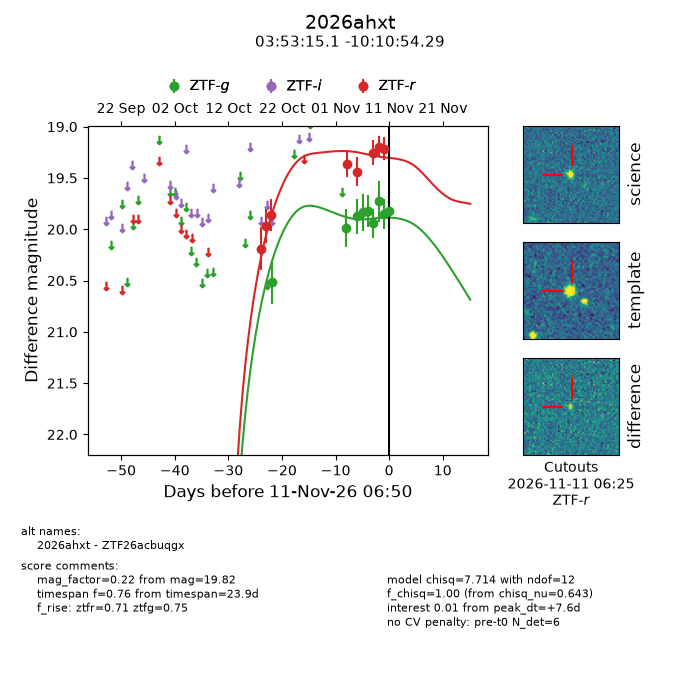
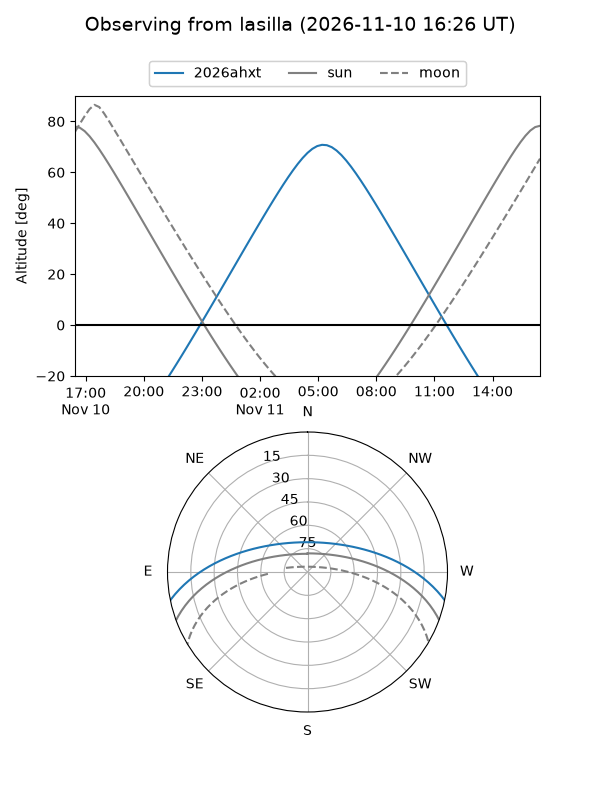
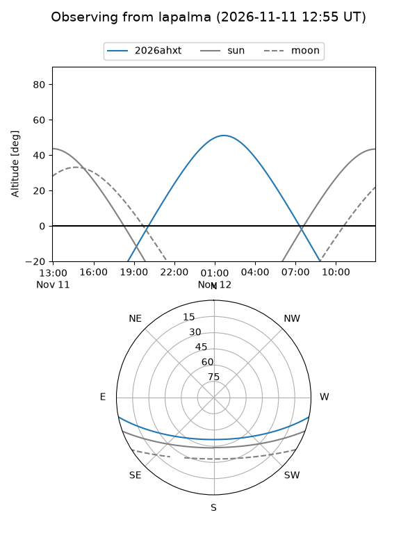
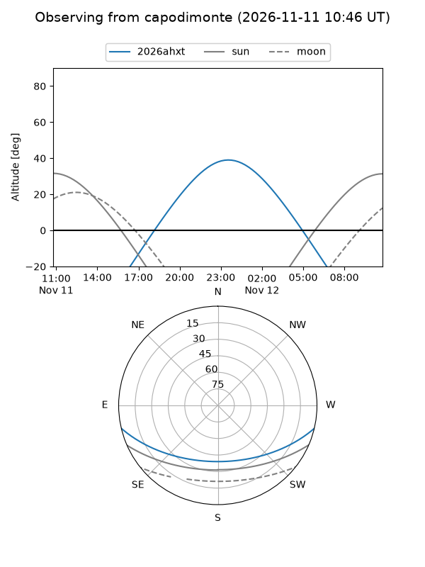
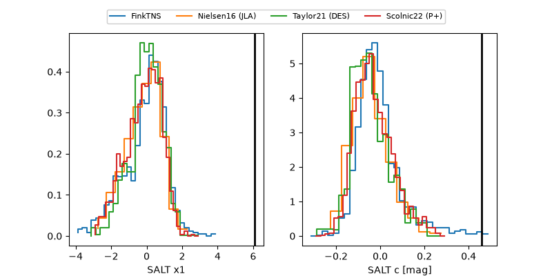

2026ahxt
Target 2026ahxt at 2026-11-11 06:52
Aliases and brokers:
FINK-ZTF: ztf.fink-portal.org/ZTF26acbuqgx
Lasair-ZTF: lasair-ztf.lsst.ac.uk/objects/ZTF26acbuqgx
ALeRCE-ZTF: alerce.online/object/ZTF26acbuqgx
YSE-PZ: ziggy.ucolick.org/yse/transient_detail/2026ahxt
TNS name: wis-tns.org/object/2026ahxt
Direct TNS query: direct search
alt names
ZTF26acbuqgx (ztf,fink_ztf)
2026ahxt (tns,yse)
Coordinates:
equatorial (ra, dec) = 58.3131,-10.18175
equatorial (HMS+DMS) = 03:53:15.14,-10:10:54.29
galactic (l, b) = (200.2767,-44.03422)
Flags:
peak dt: +7.6
Photometry:
last ztfg=19.82, ztfr=19.22
9 ztfg, 8 ztfr detections
Lightcurve

Visibility



Additional plots
